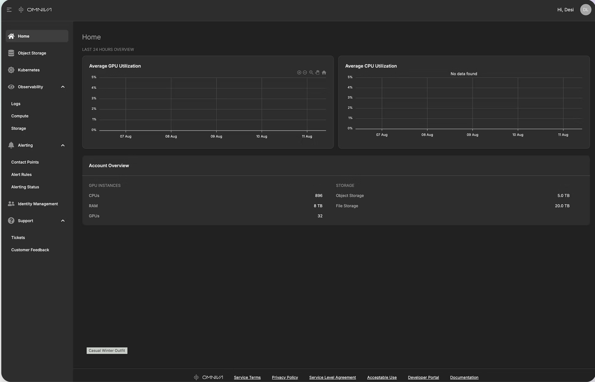
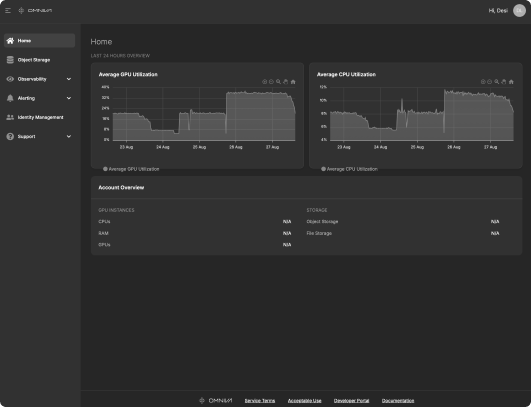

01 / Context
The product had matured.
The experience hadn't caught up.
This diagram illustrates the overall ecosystem behind the Omniva Cloud Console — how customer actions, internal operations, infrastructure, and AI intelligence connect into a single platform.

Omniva is an AI-native cloud infrastructure console. Engineers use it to manage clusters, storage, and workloads — operations where confusion has a real cost.
The product had been built for technical capability first. The homepage reflected that — it showed what the system could do, not what engineers needed to do next. Datadog showed low engagement and low time-on-page across core sections. Session recordings showed engineers landing and leaving within seconds.
The product was technically ready to grow up. This is what building that foundation looked like.
"I just want to know if my clusters are running."
— DevOps Engineer, session recording
"I never know what to do next."
— ML Researcher, user interview
Success looked like this
- — Engineers return to the homepage daily as part of their operational workflow
- — CS escalations drop — engineers activate and operate independently
- — Session depth grows from seconds to minutes
Before state — inherited dashboard

